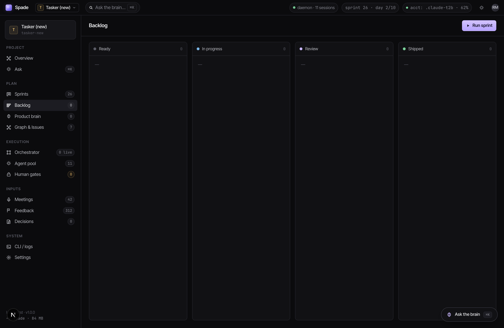
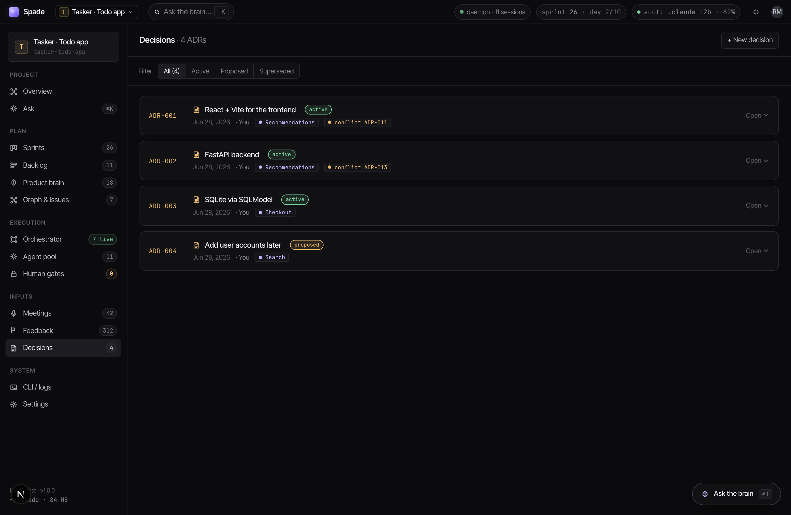
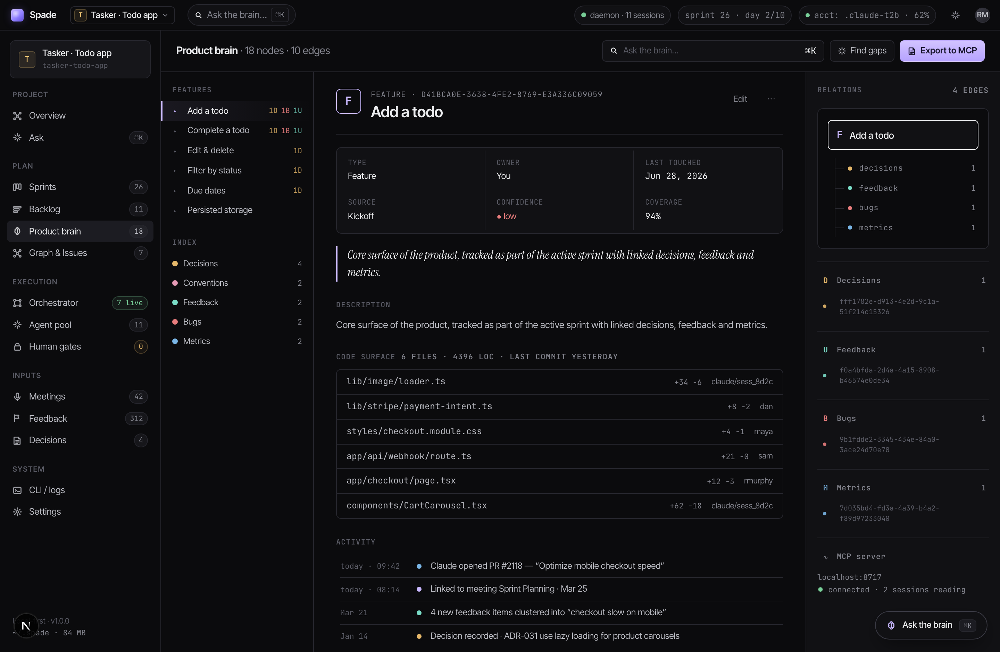
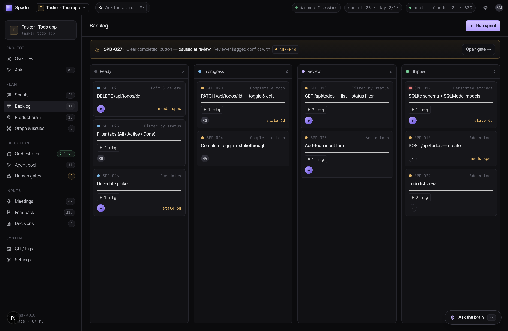
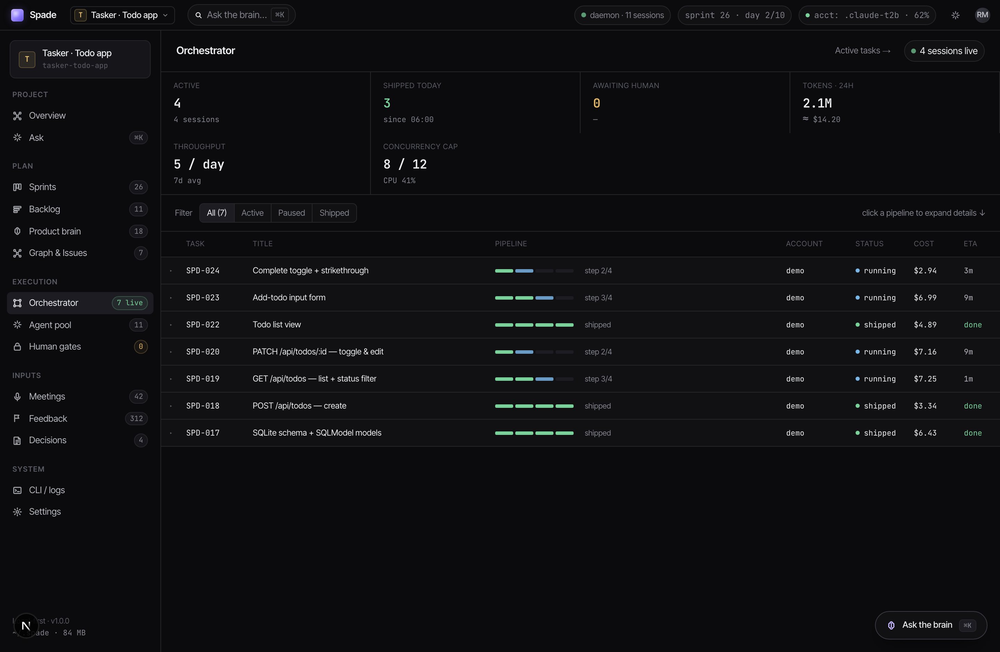
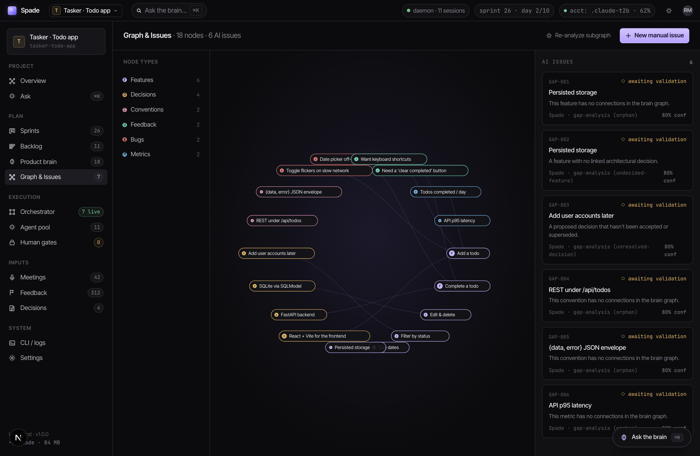

You’ll create a small todo app (React front, FastAPI back) yourself, and learn each part of Spade as you go. Nothing is pre-filled — you build it, you watch it appear.
Make a project to hold the app. We’ll call it todo.
B=127.0.0.1:8765 ; P=todo
curl -s $B/projects -H 'content-type: application/json' \
-d "{\"id\":\"$P\",\"name\":\"Todo App\",\"path\":\"~/code/todo\"}"
curl -s -X PUT $B/current-project -H 'content-type: application/json' -d "{\"project_id\":\"$P\"}"Prefer clicking? In the UI, open the project switcher (top-left) → New project → name it, give it a folder.

Record the three architecture decisions that shape the app.
for d in "React + Vite for the frontend" "FastAPI backend" "SQLite via SQLModel"; do
curl -s $B/brain/nodes -H 'content-type: application/json' \
-d "{\"project_id\":\"$P\",\"type\":\"decision\",\"label\":\"$d\",\"status\":\"active\",\"owner\":\"You\"}"; doneOr click: Decisions → + New decision, three times.

The “product brain” is Spade’s knowledge graph. Add the app’s features as nodes.
for f in "Add a todo" "Complete a todo" "Edit & delete" \
"Filter by status" "Due dates" "Persisted storage"; do
curl -s $B/brain/nodes -H 'content-type: application/json' \
-d "{\"project_id\":\"$P\",\"type\":\"feature\",\"label\":\"$f\",\"owner\":\"You\"}"; done
Now the work itself: backend CRUD + the React UI, as backlog cards.
add(){ curl -s $B/tasks -H 'content-type: application/json' \
-d "{\"project_id\":\"$P\",\"title\":\"$1\",\"feature\":\"$2\",\"priority\":$3}" >/dev/null; }
# backend
add "SQLite schema + SQLModel models" "Persisted storage" 0
add "POST /api/todos — create" "Add a todo" 1
add "GET /api/todos — list + status filter" "Filter by status" 1
add "PATCH /api/todos/:id — toggle & edit" "Complete a todo" 1
add "DELETE /api/todos/:id" "Edit & delete" 2
# frontend
add "Todo list view" "Add a todo" 1
add "Add-todo input form" "Add a todo" 1
add "Complete toggle + strikethrough" "Complete a todo" 1
add "Filter tabs (All / Active / Done)" "Filter by status" 2
add "Due-date picker" "Due dates" 2
echo "backlog ready ✓"
Run one task through the 4-stage pipeline (developer → reviewer → integrator → documentor).
Connect an account once (below), then:
Spade spawns a real developer agent in your project folder and tracks it on the Orchestrator.
# grab a task id from your backlog
curl -s "$B/tasks?project_id=$P" | python3 -c "import sys,json
for t in json.load(sys.stdin)['tasks'][:4]: print(t['id'], t['title'])"
# run it through all 4 stages instantly (fake spawn)
# NOTE: this helper writes in-process — point it at your server's data dir:
TUI_PILOT_HOME=~/spade-qa ../../.venv/bin/python -m demo --advance SPD-002 --project todo --to shipped
It reasons over your graph — for free.

You’ve seen every surface. Day to day, you don’t curl — you ask. Connect an account once:
curl -s $B/accounts/import -H 'content-type: application/json' \
-d '{"id":"me","label":"My Claude","config_dir":"~/.claude"}'
curl -s -X PUT $B/projects/todo/accounts -H 'content-type: application/json' -d '{"account_ids":["me"]}'Then ⌘K and try:
Watch the brain and backlog update — the agent did it, for your project.